Pihak Aceh (Selundupan)
Beaumont-Vitali M1871/88
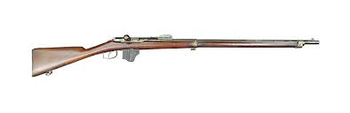
1. Kaliber: 11.3 x 51mmR
2. Kapasitas: 4 Butir (Internal)
3. Jenis: Bolt-action Rifle
4. Status: Standar Infanteri
5. Fungsi: Tempur Jarak Jauh
6. Mekanisme: Vitali Box System
Pihak Belanda (Standar)
Steyr-Mannlicher M.1895

1. Kaliber: 6.5 x 53mmR
2. Kapasitas: 5 Butir (En-bloc)
3. Jenis: Straight-pull Bolt
4. Status: Standar KNIL
5. Fungsi: Tempur Reaksi Cepat
6. Mekanisme: Clip-fed Loading
Pihak Aceh (High-End)
Winchester Model 1873
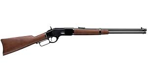
1. Kaliber: .44-40 Winchester
2. Kapasitas: 15 Butir (Tube)
3. Jenis: Lever-action Rifle
4. Status: Senjata Elit
5. Fungsi: Volume Tembak Tinggi
6. Mekanisme: Lever Repeating
Pihak Belanda (Elit)
M95 Marechaussee Carbine
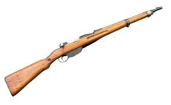
1. Kaliber: 6.5 x 53mmR
2. Kapasitas: 5 Butir (En-bloc)
3. Jenis: Short Carbine
4. Status: Unit Khusus Marsose
5. Fungsi: Gerilya Hutan Rimba
6. Mekanisme: Lightweight Design
Pihak Aceh (Veteran)
Snider-Enfield Mk III
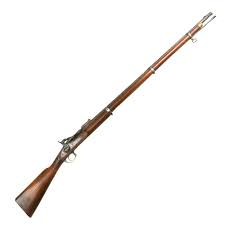
1. Kaliber: .577 Snider
2. Kapasitas: 1 Butir (Single)
3. Jenis: Breech-loading Rifle
4. Status: Senjata Senior
5. Fungsi: Penembak Jitu
6. Mekanisme: Hinged Breechblock
Pihak Belanda (Sidearm)
Revolver Vickers M1891
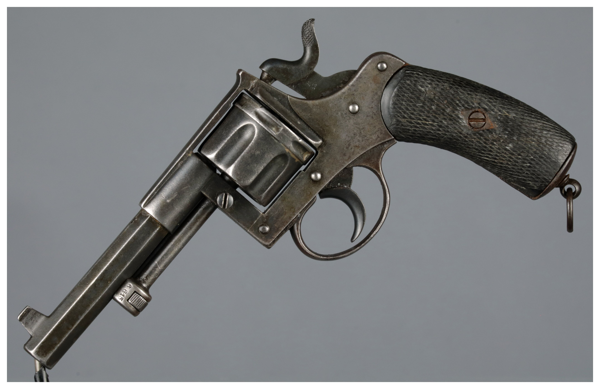
1. Kaliber: 9.4mm Dutch
2. Kapasitas: 6 Butir (Cylinder)
3. Jenis: Double-action Revolver
4. Status: Senjata Perwira & Marsose
5. Fungsi: Pertahanan Diri Jarak Dekat
6. Mekanisme: Solid Frame Revolver
Pihak Belanda (Melee)
Klewang M1898
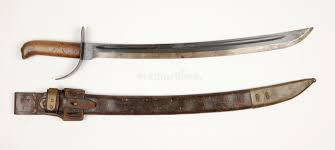
1. Kaliber: N/A (Bilah Baja)
2. Kapasitas: N/A (Satu Bilah)
3. Jenis: Cutlass / Sword
4. Status: Perlengkapan Wajib
5. Fungsi: Duel Jarak Dekat
6. Filosofi: Efisien & Praktis
Pihak Aceh (Melee)
Rencong Meucugek
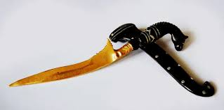
1. Kaliber: N/A (Bilah Tajam)
2. Kapasitas: N/A (Satu Bilah)
3. Jenis: Dagger / Belati
4. Status: Simbol Perjuangan
5. Fungsi: Senjata Tikam Utama
6. Filosofi: Sifat Religius
Pihak Aceh (Melee)
Sikin Panyang
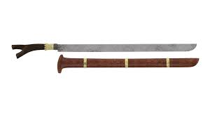
1. Kaliber: N/A (Bilah Panjang)
2. Kapasitas: N/A (Satu Bilah)
3. Jenis: Single-edged Sword
4. Status: Senjata Utama Gerilya
5. Fungsi: Tebasan Jarak Menengah
6. Filosofi: Keberanian Pejuang
Pihak Aceh (Artileri)
Lela (Meriam Perunggu)
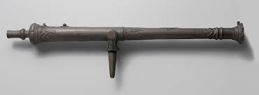
1. Kaliber: Varies (Small-bore)
2. Kapasitas: 1 Proyektil
3. Jenis: Swivel Gun Meriam
4. Status: Artileri Pertahanan
5. Fungsi: Anti-Personel / Kapal
6. Mekanisme: Muzzle Loading
Pihak Belanda (Artileri)
Mortir Coehorn
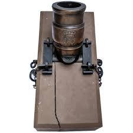
1. Kaliber: 12 cm (Varies)
2. Kapasitas: 1 Granat Mortir
3. Jenis: Short-range Mortar
4. Status: Artileri Pengepungan
5. Fungsi: Penghancur Benteng Kuta
6. Mekanisme: High-angle Fire
Pihak Aceh (Trap/Jebakan)
Ranjau Bambu (Suda)
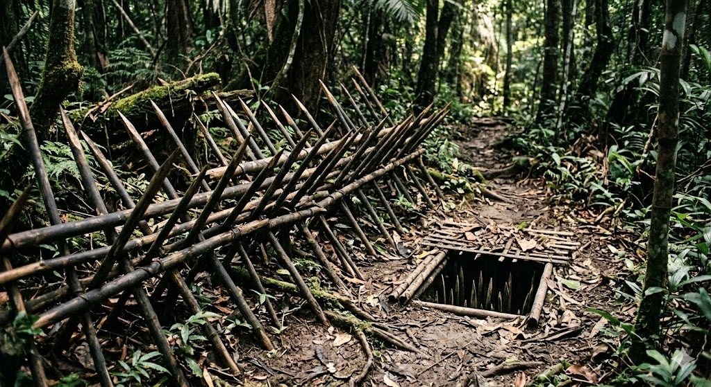
1. Kaliber: N/A (Bambu Runcing)
2. Kapasitas: Varies (Area Denial)
3. Jenis: Punji Stakes / Jebakan
4. Status: Senjata Rakyat & Gerilya
5. Fungsi: Sabotase & Teror Kaki
6. Filosofi: Pemanfaatan Alam Aceh